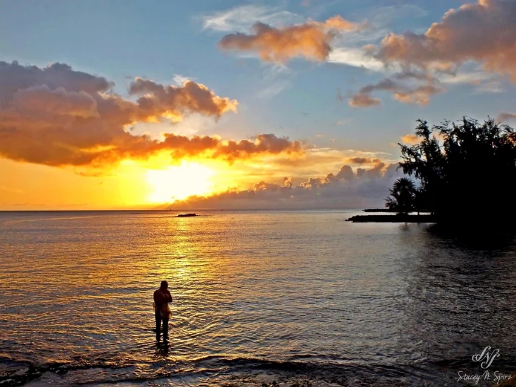

A little about me.
A personal collection of light, places, people, and moments worth remembering.

Photography is something I love.
I grew up on Oʻahu, and I've always loved capturing the beauty around me — especially those moments that might pass before you know it.
My camera has taken me from tropical gardens and island sunsets to mountain landscapes, wildlife, portraits, and energetic performances. I enjoy finding interesting light, paying attention to little details, and trying new approaches.
Photography is primarily my hobby. I'm still learning, exploring, and expanding my portfolio, and that's part of what makes it exciting. Every opportunity to photograph something different teaches me a little more.
Open to photo requests. I'm happy to hear ideas for portraits, events, candid moments, or something completely different. I currently work on a donation basis as I continue building my photography gallery.